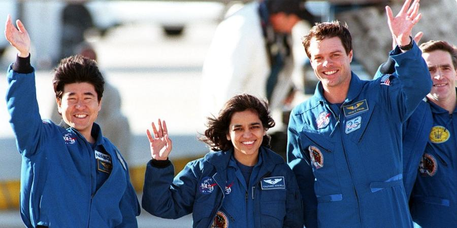

Dr Kalpana Chawla
"The path from dream to success does exist"

Kalpana Chawla, one of the US space shuttle Columbia's six international crewmembers, second from left waving to photographers, returning from space upon completing a 15-day 16 hour science mission.
Here's a time line of Kalpana Chawla's life:
- 1962 - born on 17 March 1962.Official date of birth was on 1 July 1961
- 1982 - After getting a Bachelors degree in Aeronautical Engineering from Punjab Engineering College, Chandigarh, she moved to the United States in 1982 where she obtained a Master of Science degree in Aerospace Engineering from the University of Texas at Arlington in 1984.
- 1983 - The Kalpana Chawla Outstanding Recent Alumni Award at the University of Colorado, given since 1983, was renamed after Chawla.
- 1984 - Chawla was the first Indian-born woman and the second Indian person to fly in space, following astronaut Rakesh Sharma who flew in 1984 on the Soyuz T-11.
- 1986 - Chawla went on to earn a second Masters in 1986 and a PhD in aerospace engineering in 1988 from the University of Colorado Boulder.
- 1988 - She began working at NASA, where she did computational fluid dynamics (CFD) research on vertical and/or short take-off and landing (V/STOL) concepts.
- 1991 - After becoming a naturalized U.S. citizen in April 1991, Chawla applied for the NASA Astronaut Corps.
- 1993 - she joined Overset Methods, Inc. as Vice President and Research Scientist specializing in simulation of moving multiple body problems.
- 1995 - She joined the corps in March 1995 and was selected for her first flight in 1996.
- 1997 - Her first space mission began on November 19, 1997, as part of the six-astronaut crew that flew the Space Shuttle Columbia flight STS-87.
- 2000 - Chawla was selected for her second flight as part of the crew of STS-107.
- 2002 -July- This mission was repeatedly delayed due to scheduling conflicts and technical problems such as the July 2002 discovery of cracks in the shuttle engine flow liners.
- 2002 -September- The first satellite of the series, "MetSat-1", launched by India on September 12, 2002 was renamed "Kalpana-1". 74th Street in Jackson Heights, Queens, New York City has been renamed Kalpana Chawla Way in her honor.
- 2003 -January 16- Chawla finally returned to space aboard Space Shuttle Columbia on the ill-fated STS-107 mission.
- 2003 -Chawla died in the Space Shuttle Columbia disaster which occurred on February 1, 2003 when the Columbia disintegrated over Texas during re-entry into the Earth's atmosphere, with the death of all of seven crew members, shortly before it was scheduled to conclude its 28th mission, STS-107.
"The remarkable journey of courage and determination that made this Indian woman, hailing from a small town in Haryana, a citizen of the Milky Way will remain a source of pride for all Bharatvasis and Bharatvanshis. It will also inspire young Indians, especially women dream big and to work hard to realise their dreams"
-- Indian President APJ Abdul Kalam